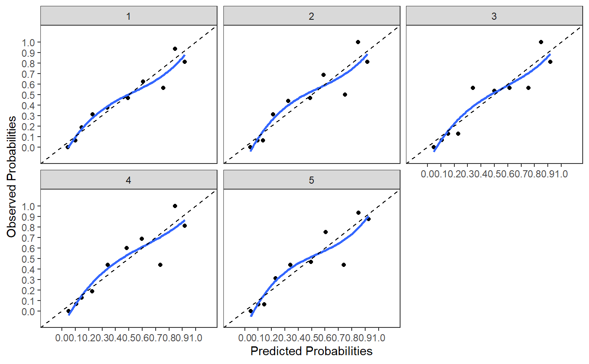

R/mivalext_lr.R
mivalext_lr.Rdmivalext_lr External validation of logistic prediction models
mivalext_lr( data.val = NULL, data.orig = NULL, nimp = 5, impvar = NULL, Outcome, predictors = NULL, lp.orig = NULL, cal.plot = FALSE, plot.indiv = FALSE, val.check = FALSE, g = 10, groups_cal = 10 )
| data.val | Data frame with stacked multiply imputed validation datasets. The original dataset that contains missing values must be excluded from the dataset. The imputed datasets must be distinguished by an imputation variable, specified under impvar, and starting by 1. |
|---|---|
| data.orig | A single data frame containing the original dataset that was used to develop the model. Used to estimate the original regression coefficients in case lp.orig is not provided. |
| nimp | A numerical scalar. Number of imputed datasets. Default is 5. |
| impvar | A character vector. Name of the variable that distinguishes the imputed datasets. |
| Outcome | Character vector containing the name of the outcome variable. |
| predictors | Character vector with the names of the predictor variables of the model that is validated. |
| lp.orig | Numeric vector of the original coefficient values that are externally validated. |
| cal.plot | If TRUE a calibration plot is generated. Default is FALSE. |
| plot.indiv | If TRUE calibration plots of each imputed dataset are generated. Default is FALSE. |
| val.check | logical vector. If TRUE the names of the predictors of the LP are provided and can be used as information for the order of the coefficient values as input for lp.orig. If FALSE (default) validation procedure is executed with coefficient values fitted in the order as used under lp.orig. |
| g | A numerical scalar. Number of groups for the Hosmer and Lemeshow test. Default is 10. |
| groups_cal | A numerical scalar. Number of groups used on the calibration plot. Default is 10. If the range of predicted probabilities is low, less than 10 groups can be chosen. |
A mivalext_lr object from which the following objects
can be extracted: ROC results as ROC, R squared results (fixed and calibrated)
as R2 (fixed) and R2 (calibr), Hosmer and Lemeshow test as HL_test,
coefficients pooled as coef_pooled, linear predictor pooled as LP_pooled ext,
and Outcome, nimp, impvar, val.check,
g, coef.check and groups_cal.
The following information of the externally validated model is provided:
ROC pooled ROC curve (median and back transformed after pooling log transformed
ROC curves), R2_fixed and R2_calibr pooled Nagelkerke R-Square value
(median and back transformed after pooling Fisher transformed values), HLtest
pooled Hosmer and Lemeshow Test (using miceadds package), coef_pooled pooled
coefficients when model is freely estimated in imputed datasets and LP_pooled_ext
the pooled linear predictor (LP), after the externally validated LP is estimated in
each imputed dataset (provides information about miscalibration in intercept and slope).
In addition information is provided about nimp, impvar, Outcome,
val_ckeck, g and coef_check. When the external validation is
very poor, the R2 fixed can become negative due to the poor fit of the model in
the external dataset (in that case you may report a R2 of zero).
F. Harrell. Regression Modeling Strategies. With Applications to Linear Models, Logistic and Ordinal Regression, and Survival Analysis. 2nd Edition. Springer, New York, NY, 2015.
Van Buuren S. (2018). Flexible Imputation of Missing Data. 2nd Edition. Chapman & Hall/CRC Interdisciplinary Statistics. Boca Raton.
http://missingdatasolutions.rbind.io/
mivalext_lr(data.val=lbpmilr, nimp=5, impvar="Impnr", Outcome="Chronic", predictors=c("Gender", "factor(Carrying)", "Function", "Tampascale", "Age"), lp.orig=c(-10, -0.35, 1.00, 1.00, -0.04, 0.26, -0.01), cal.plot=TRUE, plot.indiv=TRUE, val.check = FALSE)#> #> #>#> $ROC #> $ROC$`ROC (logit)` #> 95% Low ROC 95% Up #> ROC (logit) 0.69344 0.85507 0.93898 #> #> $ROC$`ROC (median)` #> 1st Qu. Median 3rd Qu. #> 0.85491 0.85620 0.85789 #> #> #> $R2_fixed #> $R2_fixed$`Fisher Z (fixed)` #> [1] 0.46333 #> #> $R2_fixed$`Median (fixed)` #> 1st Qu. Median 3rd Qu. #> 0.46254 0.46506 0.47510 #> #> #> $R2_calibr #> $R2_calibr$`Fisher Z (calibrated)` #> [1] 0.46465 #> #> $R2_calibr$`Median (calibrated)` #> 1st Qu. Median 3rd Qu. #> 0.46309 0.46562 0.47609 #> #> #> $HLtest #> D p df df2 #> 1.11778 0.37425 8.00000 36.86064 #> #> $coef_pooled #> (Intercept) Gender factor(Carrying)2 factor(Carrying)3 #> -9.66084 -0.41365 0.92735 1.05231 #> Function Tampascale Age #> -0.03579 0.25232 -0.01235 #> #> $LP_pooled_ext #> (Intercept) lp.ext #> -0.07881 0.98183 #> #> $nimp #> [1] 5 #> #> $impvar #> [1] "Impnr" #> #> $Outcome #> [1] "Chronic" #> #> $val_check #> [1] FALSE #> #> $g #> [1] 10 #> #> $coef_check #> [1] "(Intercept)" "Gender" "factor(Carrying)2" #> [4] "factor(Carrying)3" "Function" "Tampascale" #> [7] "Age" #> #> $groups_cal #> [1] 10 #>